Bear Salon is an indie-pop band from Allston, MA. With three separate songwriters, the band has three distinct styles that blend to form a cohesive sound. The Bears include James Barry on drums, Linden Crumrine on bass, and Thomas Nelson, Zac Hartwell, and Jack O'Brien on guitar and vocals. They gig in the greater Boston area, so check them out!
 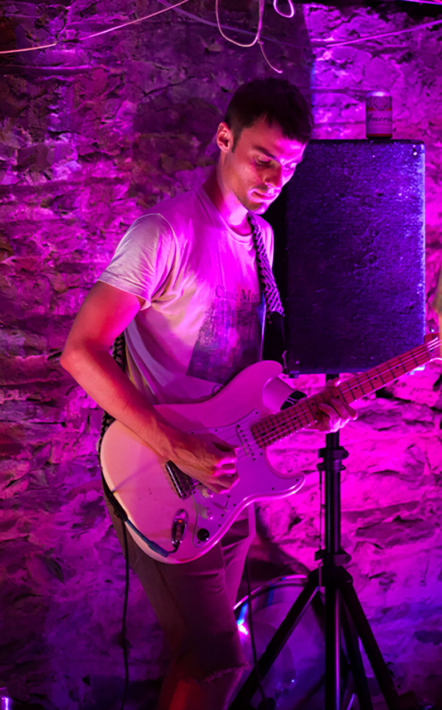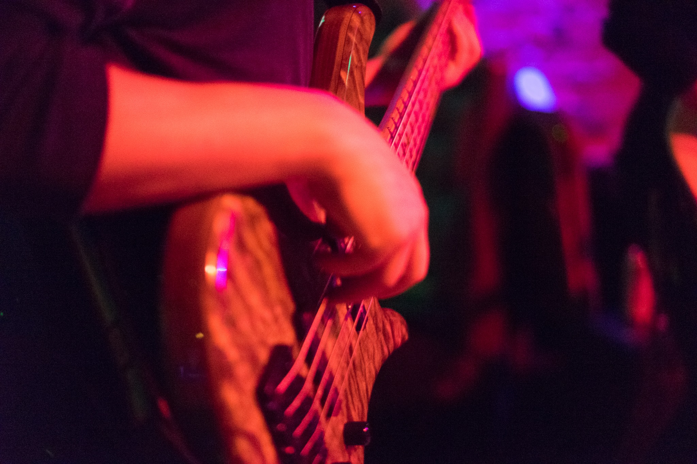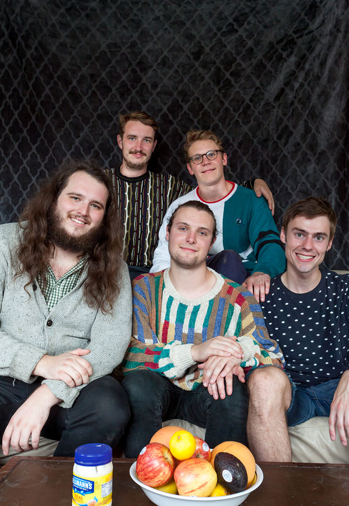
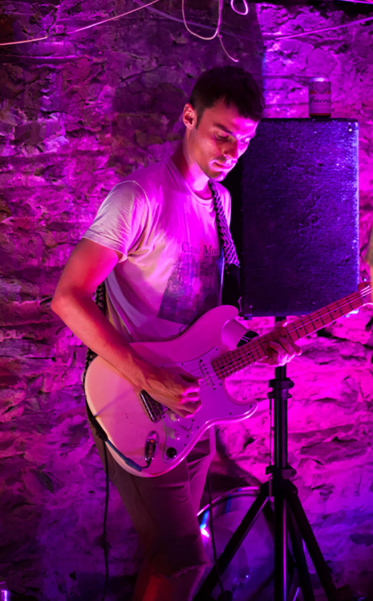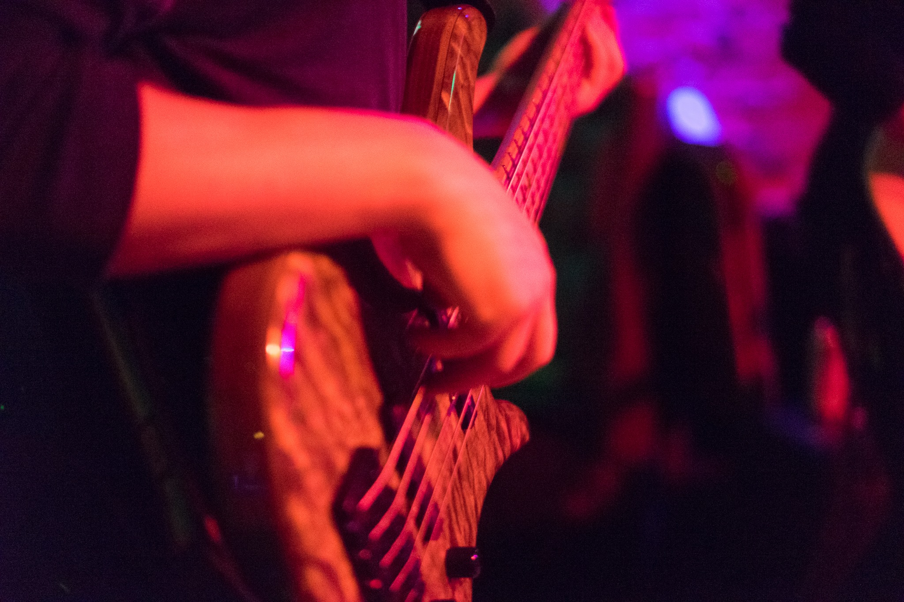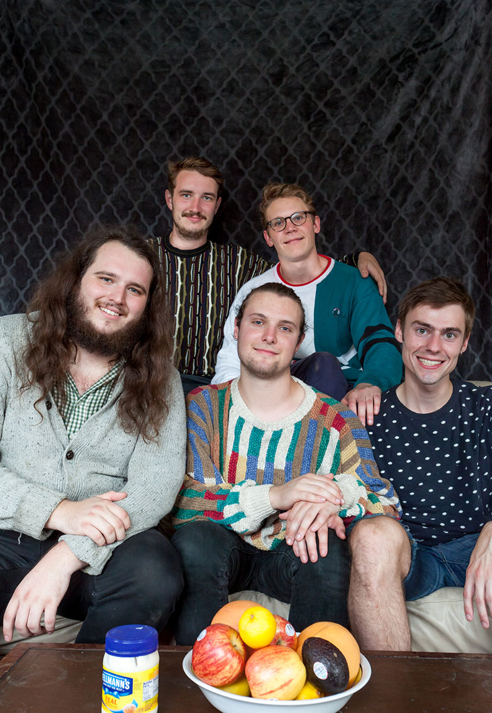 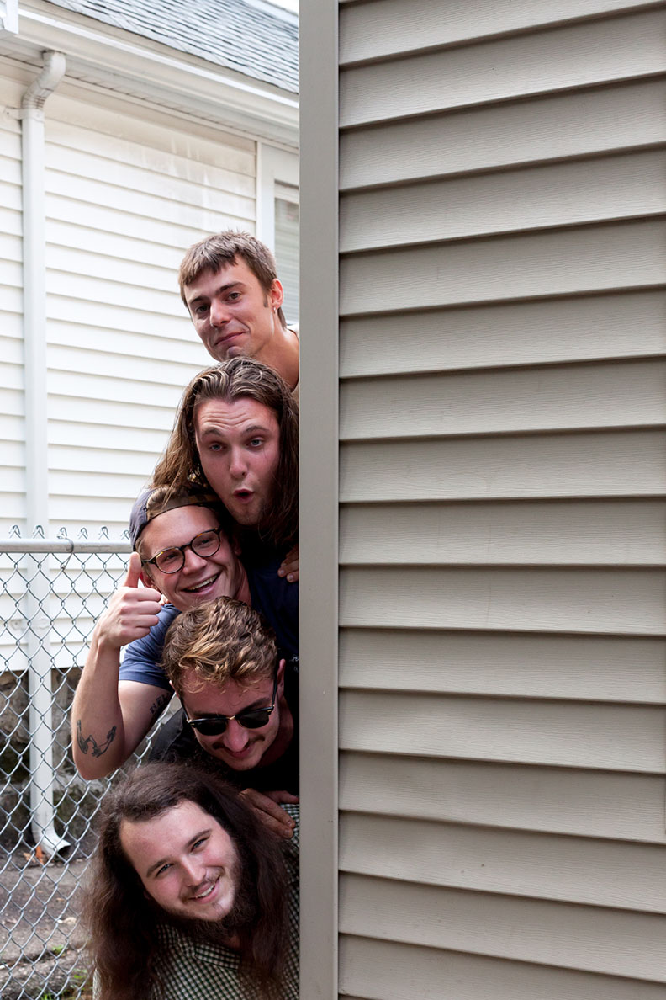
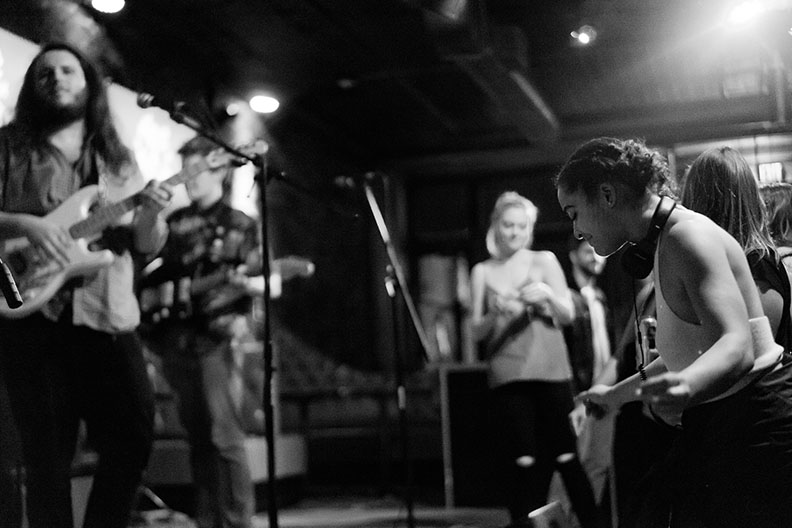
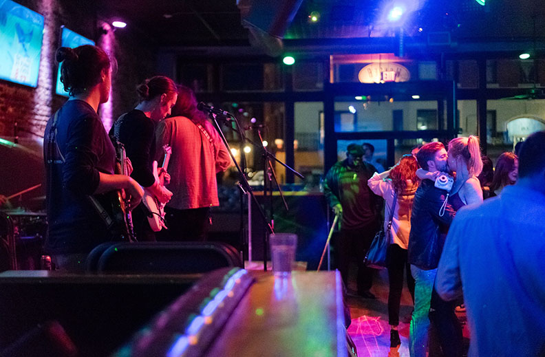
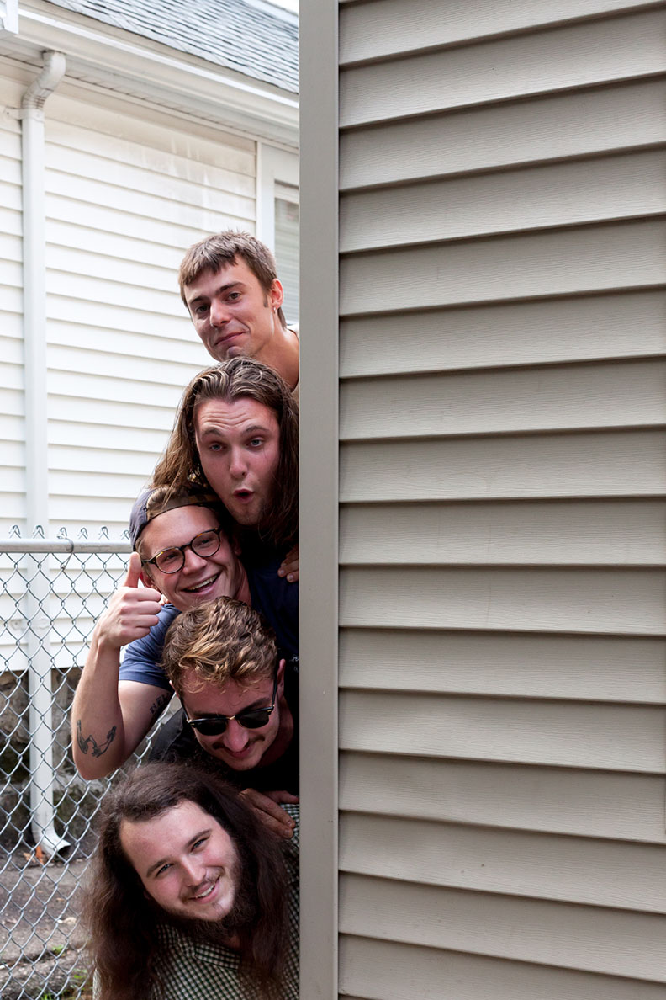
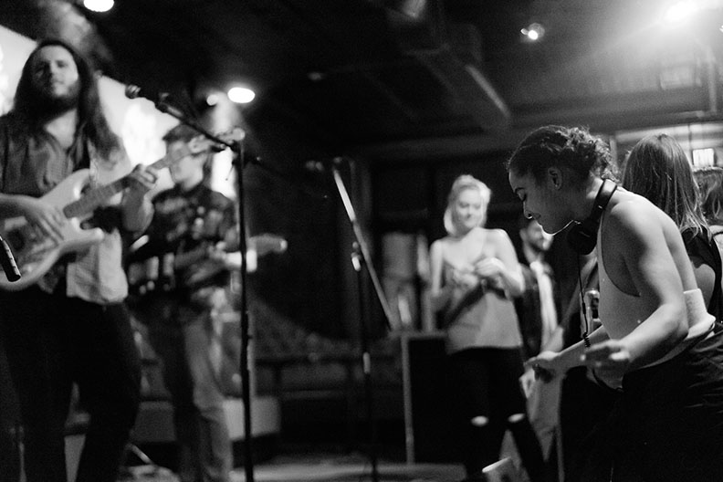
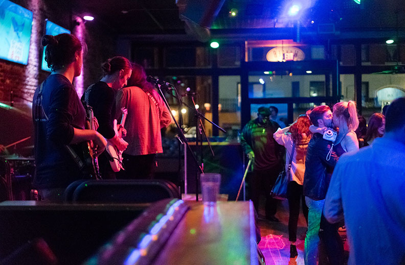